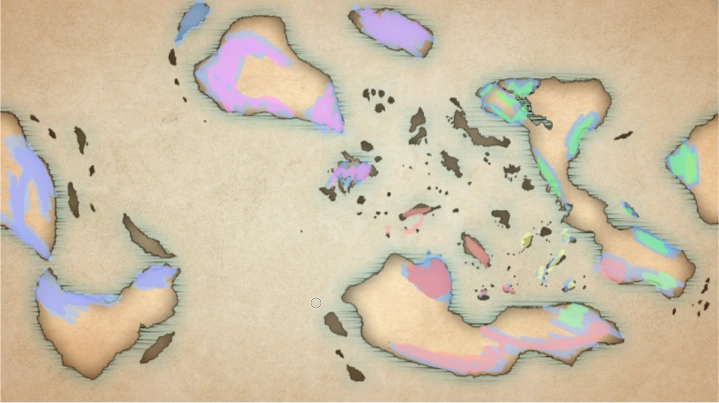

Vagrant heavily relies on worldbuilding. The world of Vagrant doesn't have a set size and is in no way related to earth.
The world has no restrictions on fantasy, except for that it must fit in the story. Floating island and high plateaus are
of course there, but there are also upside-down forests, floating rivers, solid clouds, ocean-sky reversed lands, ect.
How this works will be explained later, in short its supernatural, but has rules. The world features a lot of custom terrain
and life
The world has been wiped multiple times due to the chain reactions of blighted spirits appearing.
The vagrant world map is in no way related to Earth or any other map and was self-made
This map was based off of the idea that it was first one continent, purely so it looked realistic.
Through colors you can see what areas humans know about as a whole and through color-code you can see what areas can
interact and know about each other. For example red knows about red, but doesn't know about green. Not all areas in the
colored regions are actually inhabitable, it purely means that they know about it. (The colors on this map aren't accurate,
they're just there as explanation)
The world has different era's wherever you go, but the maximum is steampunk and clockpunk.
Though there can be elements of biopunk and other technologies, there won't be a country with any of these
themes since they'll become too op. (Flintlocks are still a thing). Higher technologies are less common.
Floating rivers and upside-down forests are all easily possible. Most of the supernatural events and terrain are caused by spirits. Since there are less spirits around humans and they cause the supernatural, the terrain around civilization is normal compared to the wild, where there are more spirits and are as a result more supernatural. You can also think of it as density, the denser the concentration of spirits is the more supernatural it is. There is no true and clear way to predict terrain in the wild.